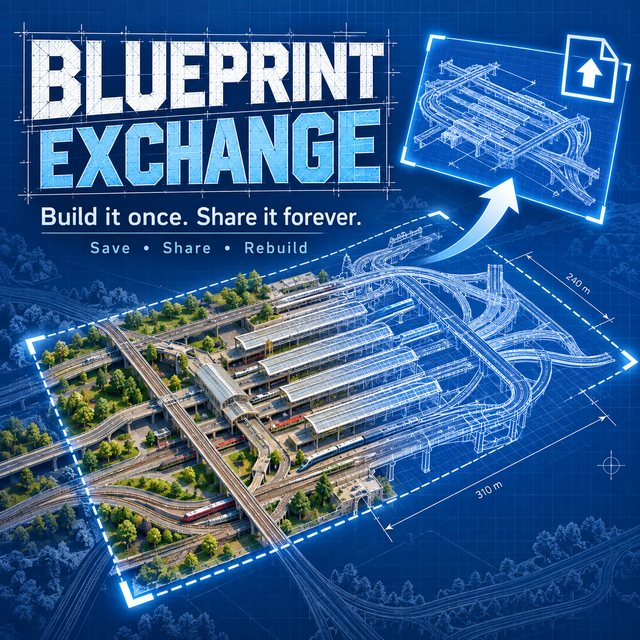

About Blueprint Exchange
Build it once. Share it forever.
The idea
Blueprint Exchange lets Transport Fever 2 players capture complete layouts — stations, junctions, yards, hubs and whole transport complexes — and share them as portable blueprint files.
Capture a design once, place it in any save, and pass it on to other players through the community library.
No coding.
No Lua knowledge.
No Blender.
No modding experience required.
If you can build it in Transport Fever 2, you can share it.

A blueprint can hold track layouts, roads, stations and constructions, signals, junctions and depots, and complex combinations of all of them. Anything you want included just has to be covered by your capture circles. You can test-place a copy before you keep it, and undo a placement if it wasn’t where you meant it to go.
Why BPX exists
Players build brilliant layouts again and again — a clever cargo terminal, a clean station throat, a compact depot — but there hasn’t been an easy way to turn one into portable, reusable community content that other people can place in their own game.
Blueprint Exchange gives a layout a file of its own, so the thing you built can be placed on another map and handed to someone else exactly as you made it.
Community contribution
Your game. Your layout. Your contribution.
You do not need to know how to write a Transport Fever 2 mod to make something worth sharing. Traditional modding can mean coding, modelling or scripting. Blueprint Exchange also lets layout builders, network designers, station designers and infrastructure specialists contribute something useful.
Some players are brilliant at coding.
Some are brilliant at modelling.
Some are brilliant at building ridiculous railway junctions at 2am.
Now all three can contribute. A useful layout made by an ordinary player can be downloaded and used by thousands of other players, just like a traditional mod. Ready to share yours? Upload a blueprint, or read the guides.
Credit
Special thanks to okeating, creator of Copy It!
Blueprint Exchange’s capture and rebuild system follows the approach okeating worked out in Copy It! Reading how that mod captures constructions and track and rebuilds them was the foundation of this one. Copy It! showed how much value there is in reusing a layout.
Blueprint Exchange takes the idea in a different direction with portable files, sharing across saves and players, dependency checking, and a community blueprint library.
If you haven’t tried Copy It!, do — it’s one of the best TF2 utilities there is.
Tested hard, built together
We’ve tested Blueprint Exchange deeply to make it as solid as we can. It may still not be perfect: Transport Fever 2 players are spectacularly talented at building things nobody thought to test. 😂
Found a bug, or a layout that won’t capture or place? Jump on the community forum and tell us what you built and what happened. The mod’s Log tab (or blueprint_exchange_log.txt next to the game) shows exactly what it did, so a copy of that helps a lot.
We want to make this solid for all of us.
The goal is simple:
Build it once. Share it forever.
Fan-made project
Blueprint Exchange is a fan-made community project for Transport Fever 2 players. It is unofficial and not affiliated with, endorsed by, or the responsibility of the game’s developers or publishers.